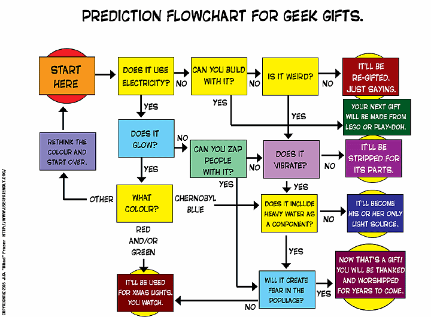
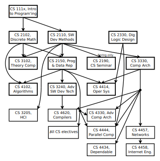
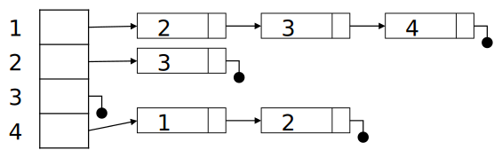
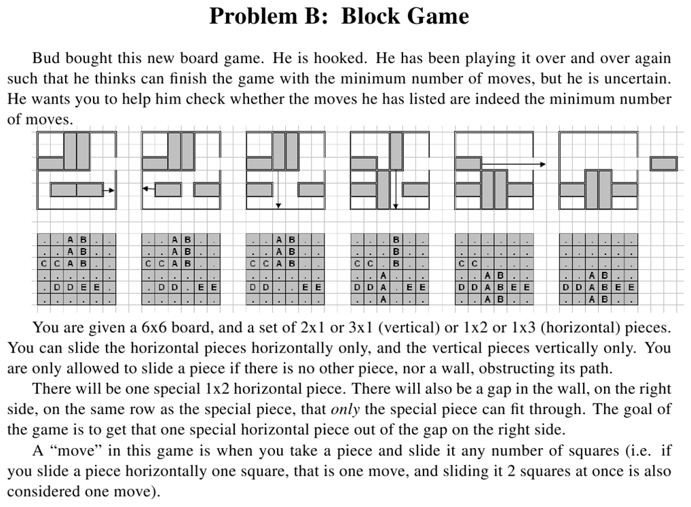

CS 2150 Roadmap
Data Representation | Program Representation | |||||
| string int x[3] char x 0x9cd0f0ad 01101011 |
Objects Arrays Primitive types Addresses bits |
Java code C++ code C code x86 code IBCM hexadecimal |
High-level language Low-level language Assembly language Machine code |
|||
Airline Routes

Flowcharts
Pre-requisite Diagrams
Representation: Adjacency Matrix
\( A[u][v] = \left\{ \begin{array}{l l} weight & \quad \text{if ($u$,$v$) $\in$ $E$}\\ 0 & \quad \text{if ($u$,$v$) $\notin$ $E$}\\ \end{array} \right. \)
|  |
Representation: Adjacency List
|  | |
Topological Sort

One valid topological sort is: v1, v6, v8, v3, v2, v7, v4, v5
This is already topologically sorted!
Another Topological Sort Example

Shortest Path Algorithms
- This version is called the "single-source" shortest path
- Given a graph \( G = (V, E) \) and a single distinguished vertex s, find the shortest weighted path from s to every other vertex in G
The weighted path length of \( v_1, v_2, \ldots , v_n \):
\( \sum_{i=1}^{n-1}c_{i,i+1} \) where \( c_{i,j} \) is the cost of edge \( (v_i,v_j) \)
Unweighted Shortest Path
- Special case of the weighted problem: all weights are 1
- Solution: breadth-first search; similar to level-order traversal for trees

Dijstra's Algorithm
|  |
Shortest Path Example Problem
From the ICPC Mid-Atlantic Regionals, 2009
